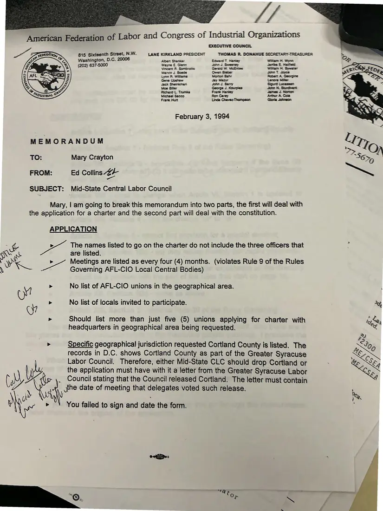
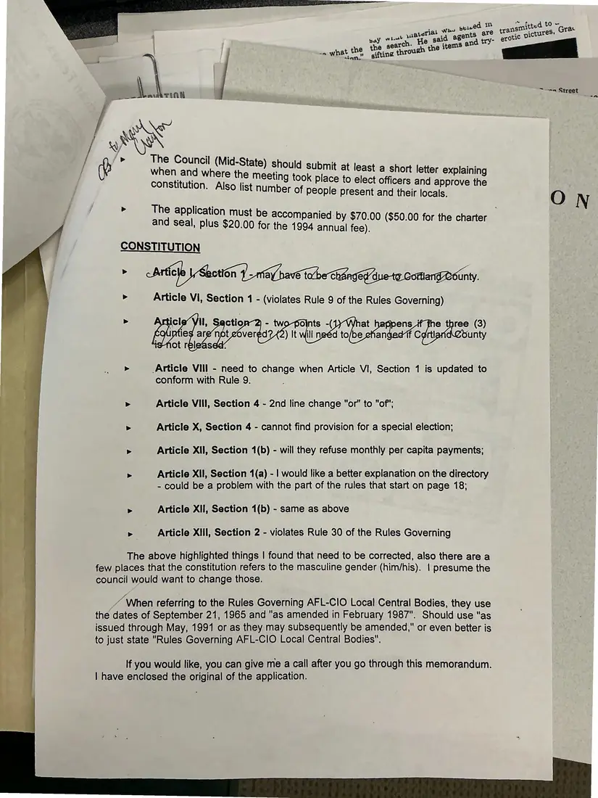

Memorandum, 2 pages
Ed Collins to Mary Crayton: review of the Mid-State charter application and constitution
February 3, 1994
An AFL-CIO memorandum listing what the Mid-State Central Labor Council still had to fix: missing officers, meeting frequency, the list of affiliated unions, a jurisdiction overlap involving Cortland County and the Greater Syracuse Labor Council, and specific articles of the draft constitution. Handwritten notes appear in the margins.
Download or cite this itemPages


(open zoom view)Read the page text (machine-read, contains errors)
This text was generated automatically from the photograph and has not been corrected. The image is the authoritative record.
American Federation of Labor and Congress of Industrial Organizations EXECUTIVE COUNCIL “Ss 815 Sixteenth Street, N.W. LANE KIRKLAND PRESIDENT THOMAS &, DONAHUE SECRETARY-TREASURER Washington, 0.C. 20006 Albert Shaner Eoward T Maney wTet eRe (202) 637-5000 Wayne E. Glenn John 1 Sweeney Jamies E Macias Vincent R Sombrotte Geraic W McErtee Wan 4 Sewa Marvin J. Goede Gwen Bieter een 7 Joyce Lynn FR. Wittens Wortan Bait Scoert A Gaarpre Gene Upshaw Jey Maru Lenore Miler Jack Sherman Jonn J. Barry Sigurd Wucasser: Moe Biller George J. Kourpias John S. Qoecvart Richard L. Trumka Frank Hariey Jdeces J. Norton Michael Sacco Ron Carey Artur A. Com Frank Hurt Linda Chaver-Thomoson Goria Jonson February 3, 1994 MEMORANDUM TO: Mary Crayton FROM: Ed Collins 24 SUBJECT: Mid-State Central Labor Council Mary, | am going to break this memorandum into two parts, the first will deal with the application for a charter and the second part will deal with the constitution. APPLICATION ; & b The names listed to go on the charter do not include the three officers that ss a are listed. Y > Meetings are listed as every four (4) months. (violates Rule 9 of the Rules eS ee Governing AFL-CIO Local Central Bodies) cM > No list of AFL-CIO unions in the geographical area. cy > No list of locals invited to participate. 2 > Should list more than just five (5) unions applying for charter with tog, headquarters in geographical area being requested. Se > Specific geographical jurisdiction requested Cortland County is listed. The A S05 records in D.C. shows Cortland County as part of the Greater Syracuse : SNe Labor Council. Therefore, either Mid-State CLC should drop Cortland or > Ne the application must have with it a letter from the Greater Syracuse Labor ( AY WA . Council stating that the Council released Cortland. The letter must contain V7 y Nh the date of meeting that delegates voted such release. , > ~\ You failed to sign and date the form.


(open zoom view)Read the page text (machine-read, mostly readable)
This text was generated automatically from the photograph and has not been corrected. The image is the authoritative record.
oe r sn. i
: ~-aa Stree
- ™ TINN { , reet
- J > The application must be accompani ,
| panied by $70.00 ($50.00 f
and seal, plus $20.00 for the 1994 ial fee) : pe a
CONSTITUTION
oi Ic on 1 -1Ma @ tobe Changedd unty.
> Article Vi, Section 1 - (violates Rule 9 of the Rules Governing)
> icl il, Sectio - two points -( at ens_if fhe three (3)
les are’ not covered? 2) It will neéd to/be efan if Cortl unty
isnot released
> Article Vill - need to change when Article VI, Section 1 is updated to
conform with Rule 9.
> Article Vill, Section 4 - 2nd line change "or" to "of";
> Article X, Section 4 - cannot find provision for a special election;
> Article XII, Section 1(b) - will they refuse monthly per capita payments;
> Article Xil, Section 1(a) - | would like a better explanation on the directory
- could be a problem with the part of the rules that start on page 18;
> Article XII, Section 1(b) - same as above
> Article XIII, Section 2 - violates Rule 30 of the Rules Governing
5 The above highlighted things | found that need to be corrected, also there are a
| few places that the constitution refers to the masculine gender (him/his). | presume the
nen council would want to change those.
: a When referring to the Rules Governing AFL-CIO Local Central Bodies, they use
3 ca the dates of September 21, 1965 and "as amended in February 1987". Should use "as
7% issued through May, 1991 or as they may subsequently be amended," or even better is
| to just state "Rules Governing AFL-CIO Local Central Bodies".
rly If you would like, you can give me a call after you go through this memorandum.
‘- | have enclosed the original of the application.See something wrong, or recognize a person or event? Send a correction. If you hold rights in this item or think it should not be public, write to the same address.